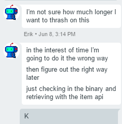

I'm a technologist, speaker, and Pluralsight author and I specialize in building full-stack solutions with a focus on modern web technology and cloud native architecture.
Remember that post I wrote about using Git LFS to store installers and binaries when using Powershell DSC? Well, it turns out my sample code was wrong! I thought it was working because my files were previously committed and not actually being hosted via Git LFS.
The problem
Turns out, if your files are backed using Git LFS then a "pointer" file is stored instead. It looks like this:
version https://git-lfs.github.com/spec/v1
oid sha256:4d7a214614ab2935c943f9e0ff69d22eadbb8f32b1258daaa5e2ca24d17e2393
size 12345
(ending \n)
When Git clones your repository, Git LFS intercepts the clone and downloads the file from a remote URL using info from this file.
That's just how Git LFS works--but surprisingly (to me), the TFS REST API apparently doesn't have a mechanism to abstract this. The Items/Blobs API has no way to serve binaries straight from its Git LFS store and I wonder if this is just an oversight. Instead, it simply serves this pointer file and you have to figure out what to do with it. We are left alone with our thoughts in a quiet despair weeping gently into a soft pillow asking ourselves why, why did we ever start learning Microsoft FrontPage in high school.
The first thing I did was call out to the heavens but my queries fell on deaf search ranking algorithms. It appeared no one else had a reason to perform the required black magicks to make this work... or if they did, they were too exhausted by the end of it to write about it. As these things often do, it fell to me to be the flag bearer and charge into the mist unto the oncoming hoard.
Can you tell I'm practicing some creative writing? I once got an A on a funny paper once.
Figuring out Git LFS
Erik, in a hurry to meet Important Business Objectives just committed his binaries in plain old Git to workaround this problem. After he berated me I begged forgiveness. Before he walked away in scorn, I grabbed his hand and pricked both our forefingers; I pressed them both together as I made a blood vow to solve this for him. Something like that, anyway.

I hadn't really peeked under the covers of Git LFS until today to solve this issue. I figured that since Git is built on top of HTTP, LFS must be handling binaries the same way and there must be a way to issue the right requests to fix the issue.
Luckily I wasn't wrong and the entire API specification for Git LFS servers is available in the Git repository. The process goes like this:
- Download the pointer file and grab the object ID and size
- Issue a POST request to the LFS "Batch" endpoint to request a download
- This is because for some backing providers there may be extra headers to send, an expiration time, etc. for the download
- Issue a GET request to the provided URL returned by the previous call
It's pretty straightforward. Still, there were some pointy rocks along the way. I'll enumerate the issues I ran into below even though you'll ignore them anyway.
Show me the code!
You got it. Here's the Gist:
Read on for more details about how this came together.
Gotcha #1: TFS doesn't tell you a file is backed by LFS
This was annoying. Ideally, I shouldn't have to download the file and inspect it to determine whether or not it's a Git LFS pointer file yet I didn't see any way in the REST API to get that determination back.
The first step is to download the file and pull out the object ID/size. "Wait," you say, an uncontrollable twitch almost spills coffee over your keyboard, "Download the entire file, even if it's, like, 12GB?!" Quiet down, an open floor plan carries your voice easily and John's looking at you with that face he makes sometimes. In a naïve implementation, yes. But you only need to grab enough bytes for 4 lines (including the ending newline which marks the EOF) and once I figure out how to formally wrap this in a DSC resource, I'll do that. The script above doesn't do that so paster beware.
Tip: The spec says the LFS server URL is determined by appending
.git/info/lfsto the end of the repo URL. You can confirm this by inspecting the output ofgit lfs envin your repo. I mistakenly kept trying to make sure that URL was right by issuing HTTP requests to it--don't be a dingus like me, it's not an endpoint it's just the base URL. Go figure.
Gotcha #2: TFS returns a deprecated LFS response
When you issue the POST to the batch endpoint, it returns a response containing the objects you requested and the links to the download/upload URLs (whatever you asked for).
Turns out, prior to Git LFS 0.6.0 the schema for objects looked like:
"objects": [
{
"_links": {
"download": { ... }
}
}
]
That's been deprecated and the latest docs reflect the new specification, as they should... but guess who returns that response? Yep.
Gotcha #3: TFS requires an Accepts header to download
In the official specs of the basic transfer method, the cURL example doesn't contain any Accepts headers. I intend to ask the team if that's an oversight but at the time of this writing it wasn't there--so I kept on getting Bad Request responses from TFS. Grr!
Well, it turns out you need an Accepts header value of application/vnd.git-lfs. Cool, that fixed it!
Note: It's been documented that
Start-BitsTransferis actually much more efficient thanInvoke-WebRequestbut unfortunately Git LFS (or TFS?) doesn't yet support the required HTTP headers to make it work. It's been proposed.
That's it!
Once I figured out all the gotchas the script I wrote worked like a charm and hey, it only took me an afternoon. I haven't yet converted it into a DSC module but an enterprising developer could easily use this in a Script DSC resource for now. The script also works nicely as a standalone cmdlet for all your DevOps needs.
Hope this helps someone. Give me some time to wrap this up with a bow on it and I'll publish it to Posh gallery for use, we will certainly be using it for our DSC. I'll be reporting this to the VSTS team so let's hope a fix comes out to make this post obsolete and serve as an exemplary specimen of my incredible storytelling ability!
About Kamran